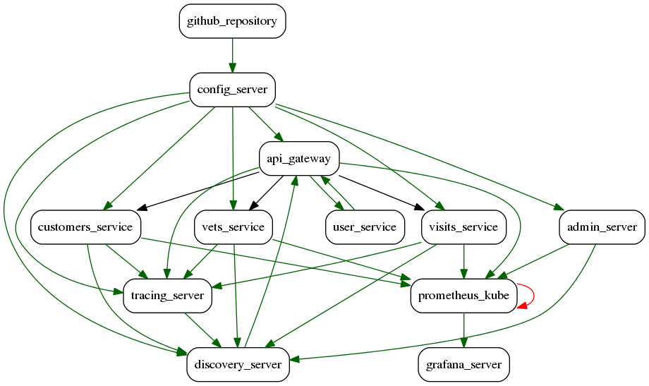

Non-conformance visualization for spring-petclinic_spring-petclinic-microservices

Overview of interpretations generated for spring-petclinic_spring-petclinic-microservices
Dynamic non-conformance between prometheus-kube and grafana-server:
Click here to view the interpretation for the dynamic non-conformance between prometheus-kube and grafana-server
Dynamic non-conformance between config-server and api-gateway:
Click here to view the interpretation for the dynamic non-conformance between config-server and api-gateway
Dynamic non-conformance between customers-service and discovery-server:
Click here to view the interpretation for the dynamic non-conformance between customers-service and discovery-server
Dynamic non-conformance between vets-service and tracing-server:
Click here to view the interpretation for the dynamic non-conformance between vets-service and tracing-server
Dynamic non-conformance between config-server and admin-server:
Click here to view the interpretation for the dynamic non-conformance between config-server and admin-server
Dynamic non-conformance between visits-service and tracing-server:
Click here to view the interpretation for the dynamic non-conformance between visits-service and tracing-server
Dynamic non-conformance between config-server and tracing-server:
Click here to view the interpretation for the dynamic non-conformance between config-server and tracing-server
Dynamic non-conformance between admin-server and prometheus-kube:
Click here to view the interpretation for the dynamic non-conformance between admin-server and prometheus-kube
Dynamic non-conformance between config-server and visits-service:
Click here to view the interpretation for the dynamic non-conformance between config-server and visits-service
Dynamic non-conformance between discovery-server and api-gateway:
Click here to view the interpretation for the dynamic non-conformance between discovery-server and api-gateway
Dynamic non-conformance between api-gateway and user-service:
Click here to view the interpretation for the dynamic non-conformance between api-gateway and user-service
Dynamic non-conformance between vets-service and prometheus-kube:
Click here to view the interpretation for the dynamic non-conformance between vets-service and prometheus-kube
Dynamic non-conformance between visits-service and discovery-server:
Click here to view the interpretation for the dynamic non-conformance between visits-service and discovery-server
Dynamic non-conformance between vets-service and discovery-server:
Click here to view the interpretation for the dynamic non-conformance between vets-service and discovery-server
Dynamic non-conformance between visits-service and prometheus-kube:
Click here to view the interpretation for the dynamic non-conformance between visits-service and prometheus-kube
Dynamic non-conformance between github-repository and config-server:
Click here to view the interpretation for the dynamic non-conformance between github-repository and config-server
Dynamic non-conformance between tracing-server and discovery-server:
Click here to view the interpretation for the dynamic non-conformance between tracing-server and discovery-server
Dynamic non-conformance between config-server and vets-service:
Click here to view the interpretation for the dynamic non-conformance between config-server and vets-service
Dynamic non-conformance between config-server and customers-service:
Click here to view the interpretation for the dynamic non-conformance between config-server and customers-service
Dynamic non-conformance between customers-service and prometheus-kube:
Click here to view the interpretation for the dynamic non-conformance between customers-service and prometheus-kube
Dynamic non-conformance between api-gateway and prometheus-kube:
Click here to view the interpretation for the dynamic non-conformance between api-gateway and prometheus-kube
Dynamic non-conformance between config-server and discovery-server:
Click here to view the interpretation for the dynamic non-conformance between config-server and discovery-server
Dynamic non-conformance between api-gateway and tracing-server:
Click here to view the interpretation for the dynamic non-conformance between api-gateway and tracing-server
Dynamic non-conformance between user-service and api-gateway:
Click here to view the interpretation for the dynamic non-conformance between user-service and api-gateway
Dynamic non-conformance between customers-service and tracing-server:
Click here to view the interpretation for the dynamic non-conformance between customers-service and tracing-server
Dynamic non-conformance between admin-server and discovery-server:
Click here to view the interpretation for the dynamic non-conformance between admin-server and discovery-server
Static non-conformance between prometheus-kube and prometheus-kube:
Click here to view the interpretation for the static non-conformance between prometheus-kube and prometheus-kube